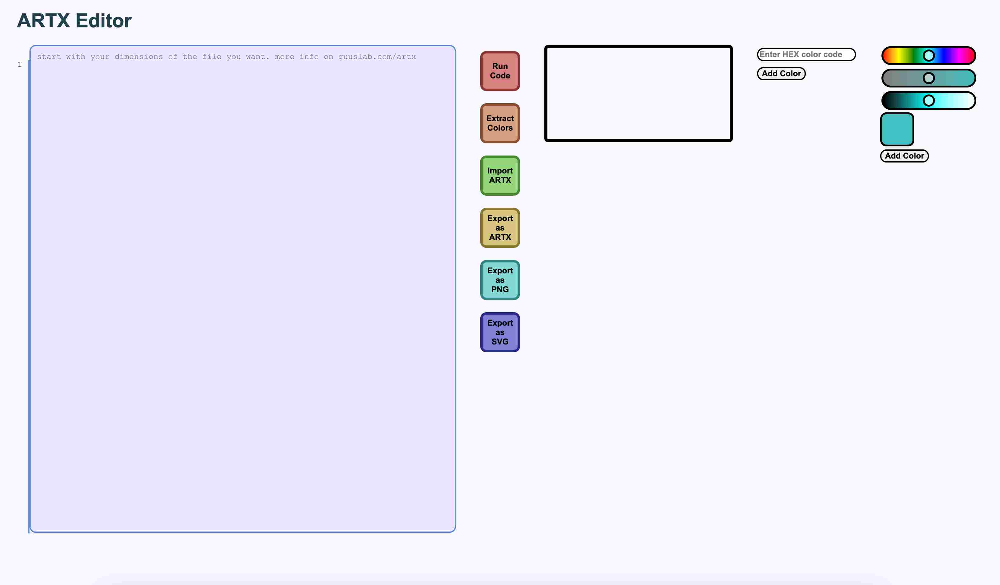
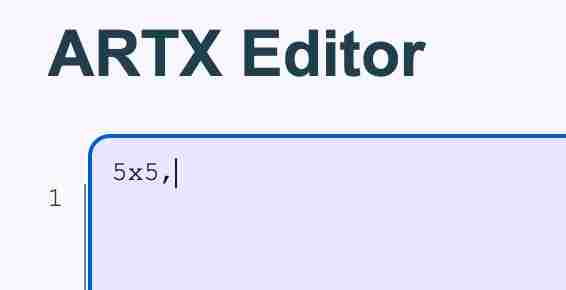
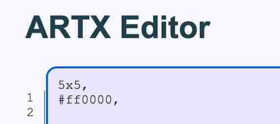
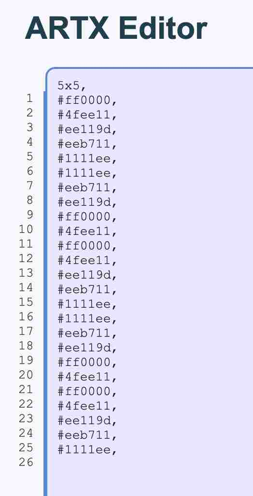
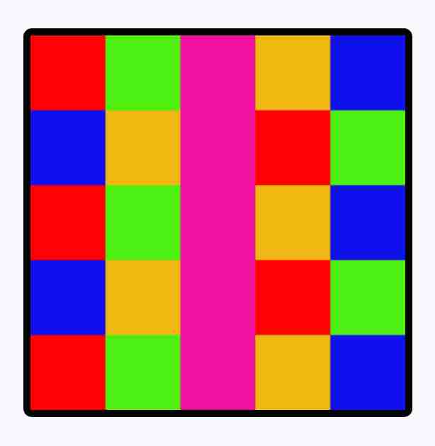

go to artxeditor you will se this
start with the dimensions of the file you want, this is in pixels, then add a , it will then look like something like this
add a HEX color code ending with a ,
keep adding colors until you have filled all the pixels, add a , after each color except leave the last one without ,
Press the red "run code" button to run the code. If all goes well, you will have this
